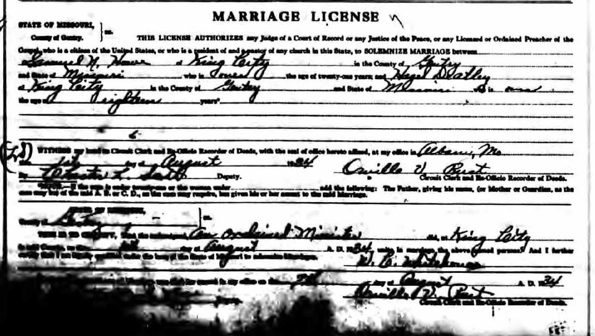
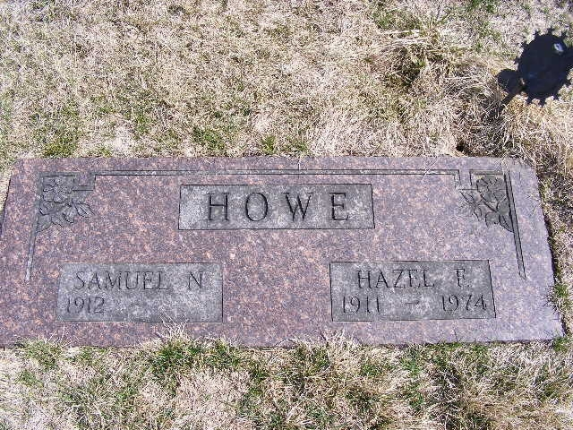

Samuel Noble Howe 1912 - 2004
[ Home ] | [ Calendar ] | [ Surnames Index ] | [ Family History ]A farmer and the son of Charles Howe and Livona Jennings, Samuel Howe, the fourth cousin twice-removed on the mother's side of Nigel Horne, was born in Gentry, Missouri, USA on Feb 29, 19121,2 and married Hazel Deatley (with whom he had 1 child, Samuel Kenneth) in King City, Missouri around 1934.
Throughout his life, he lived at his birthplace on Jan 1, 19203; and in Jackson, Missouri on Apr 1, 19302 and on Apr 1, 19404 (the same place as his parents had been living on Apr 1, 1930).
He died on Aug 16, 2004 in King City, Missouri1.
Parents
- Charles Benjamin was born on Jul 11, 1867
- Livona was born on Jul 4, 1879
Children
- Samuel Kenneth was born on May 31, 1938
Citations
- Social Security Death Index - Findmypast
- US Census 1930 - Findmypast (was age 18 and the son of the head of the household)
- US Census 1920 - Findmypast (was age 7 and the son of the head of the household)
- US Census 1940 - Findmypast (was age 28 and the head of the household)
Media
1940 census

Samuel Howe - Hazel Deatley - marriage licence

Samuel Howe - Hazel Deatley - gravestone

1920 Census

1930 Census

1930 US Census Transcription - USC-1930-004951776-00240-045
1920 US Census Transcription - USC-1920-004966297-00807-098
US Census 1940 - USC/1940/1506992903
Social Security Death Index - USBMD/SSDI/497406218
Family Tree

Generated by Ged2Site. Last updated on Jul 20, 2025